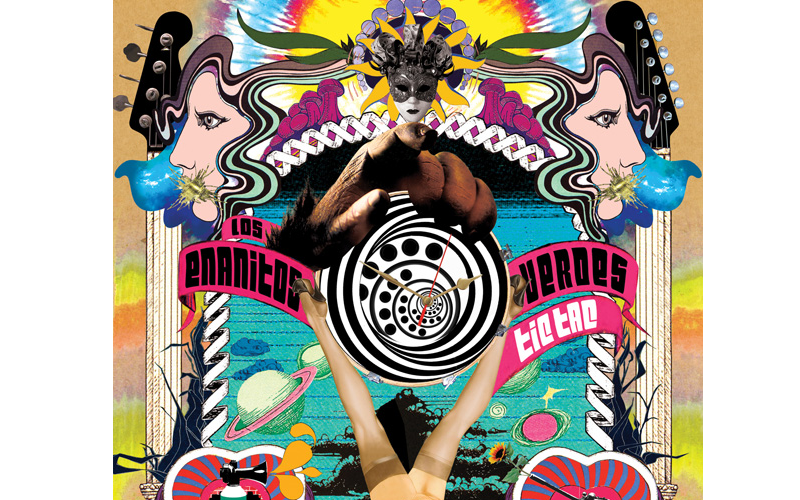
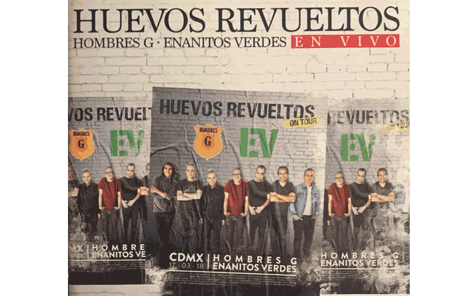

Sus integrantes originales son Marciano Cantero, Felipe Staiti y Daniel Piccolo. Comenzaron con presentaciones en diferentes clubes, pasando luego a pequeños teatros de su provincia y provincias cercanas, convirtiéndose en poco tiempo en la banda más popular y requerida de Mendoza y la zona de Cuyo. A principios de 1983 viajan a Buenos Aires a probar suerte, presentándose en clubes y bares. A principios de 1984 viajan nuevamente a Buenos Aires para grabar un demo, con resultado precarios puesto a que no se publicó. Pese a este fracaso continuaron realizando presentaciones en Mendoza y en la Capital Federal.
En 1984 el trío es invitado a participar en el "Festival de La Falda". Ese año el grupo fue elegido "Grupo Revelación" del Festival, siendo aclamado por todo el público y la prensa especializada. Después del Festival, Cantero, Staiti y Piccolo viajan a Buenos Aires, y se incorpora un nuevo integrante, Sergio Embroni (guitarra y voz) como invitado y graban para el sello discográfico independiente Mordisco su primer LP, llamado homónimamente Los Enanitos Verdes. Este primer álbum incluía el tema Aún sigo cantando, que hizo estragos en las radios capitalinas convirtiéndose rápidamente en un "clásico" del rock argentino. En el año 1985 Embrioni deja la banda y se incorpora , Tito Dávila (teclados, compositor y cantante).
En 1986 editan su segundo álbum, titulado Contrarreloj, con la producción artística de Andrés Calamaro. Dicho álbum incluye canciones como Tus viejas cartas, Cada vez que digo adiós y La muralla verde.
En el otoño de 1987 graban el álbum Habitaciones extrañas, producido nuevamente por Calamaro, incluyendo, entre otras canciones, Te vi en un tren, Por el resto y El extraño del pelo largo. El disco fue grabado y mezclado en Estudios Panda, de Buenos Aires. En este mismo año Marciano Cantero canta la canción No Te Bancaste (En Sol) en el disco Por Mirarte, de Andrés Calamaro.
| Album | Nombre | Año | Disquera |
| Ineditos vol.2 | 2010 | Seven Songs. | |
|  | Tic Tac | 2012 | Serafita Music Inc. |
|  | Huevos revueltos | 2018 | Sony Mexico. |